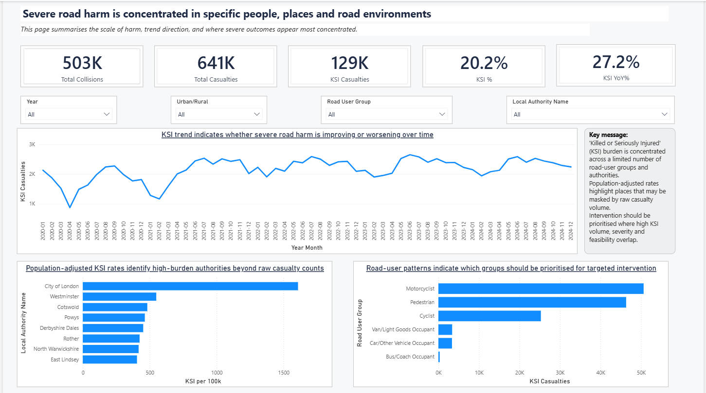
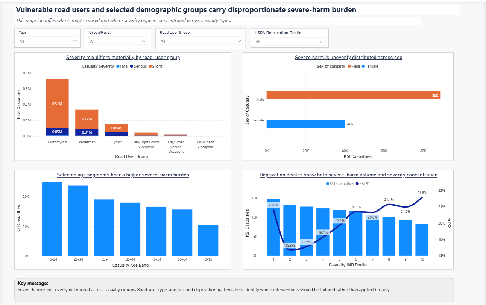
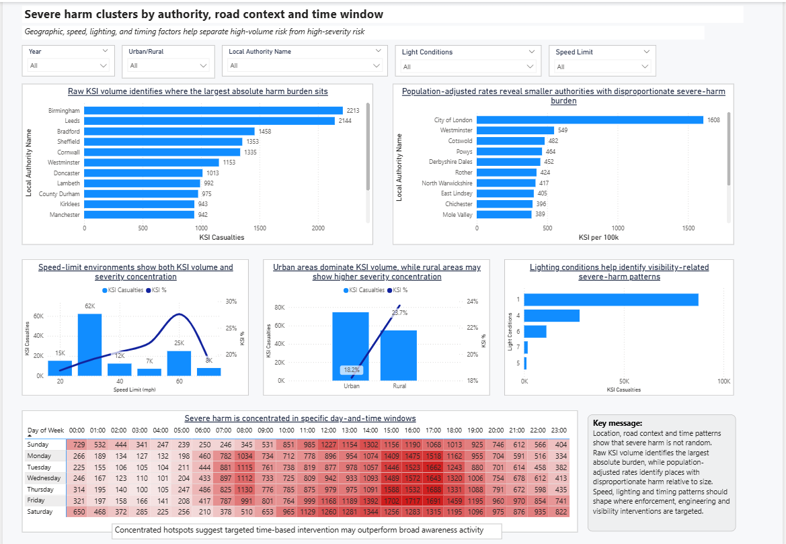
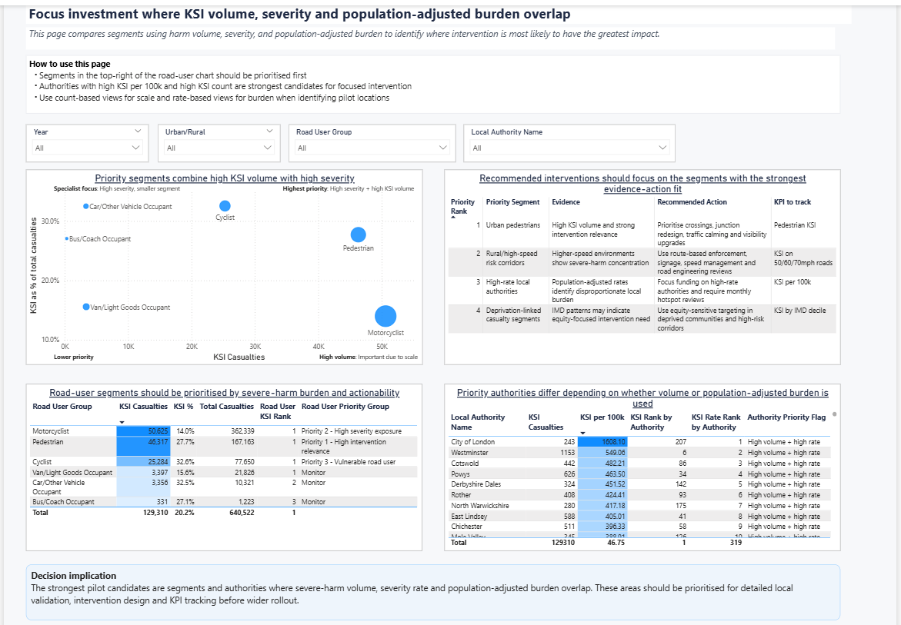
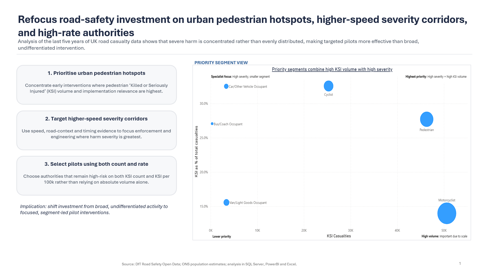

Executive Summary Dashboard
Summarises the scale of harm, trend direction and where severe outcomes appear most concentrated.
A consulting-style road safety analytics project using SQL Server, Power BI, Excel and PowerPoint to identify where limited road-safety investment should be targeted to reduce people killed or seriously injured (KSI).
The project combines official Department for Transport road safety data with ONS population estimates to analyse severe harm by road-user group, local authority, speed environment, lighting conditions, deprivation and time pattern. The final output includes a decision-focused Power BI dashboard and a four-slide executive recommendation deck.

This project was designed as a public-sector consulting case study. The core question was: where should limited road-safety investment be targeted to reduce KSI casualties most effectively?
The analysis uses Department for Transport road safety data covering collisions, vehicles and casualties, enriched with ONS population estimates to calculate population-adjusted measures such as KSI per 100,000 population. This allowed the project to compare both absolute harm burden and relative burden across local authorities.
The final recommendation is to refocus road-safety investment on urban pedestrian hotspots, higher-speed severity corridors, high-rate authorities and equity-sensitive targeting. The project demonstrates a full analytics workflow from SQL data preparation through to Power BI dashboarding, Excel QA checks and executive PowerPoint storytelling.
Where should limited road-safety investment be targeted to reduce people killed or seriously injured most effectively?
This framing moves the project beyond a standard dashboard and turns it into a decision-focused recommendation project. The dashboard is used as the evidence base, while the PowerPoint deck translates the analysis into stakeholder-ready recommendations.
Summarises the scale of harm, trend direction and where severe outcomes appear most concentrated.

Identifies who is most exposed and where severity appears concentrated across road-user groups, demographics and deprivation patterns.

Uses geographic, speed, lighting and timing analysis to separate high-volume risk from high-severity risk.

Compares segments using harm volume, severity and population-adjusted burden to identify where intervention is most likely to have the greatest impact.

A four-slide consulting-style deck translating the analysis into an answer-first recommendation, evidence base, intervention priorities and 90-day KPI framework.
The analysis supports a targeted intervention strategy rather than broad, undifferentiated activity.
Focus early interventions where pedestrian KSI volume and implementation relevance are highest.
Use speed, road-context and timing evidence to focus enforcement and engineering where harm severity is greatest.
Prioritise authorities that remain high-risk on both KSI count and KSI per 100,000 population, while using deprivation-linked patterns to identify where intervention may have the greatest equity value.
Road safety analysis can help decision-makers understand where harm is concentrated and where intervention may have the greatest impact. By combining official transport data with population context, this project shows how public datasets can be transformed into a structured analytical product that supports prioritisation and strategic decision-making.
This is my flagship portfolio project because it brings together the full analytics workflow: SQL-based data preparation, Power BI dashboarding, Excel-supported validation, contextual analysis using official public datasets and executive-level communication through PowerPoint.